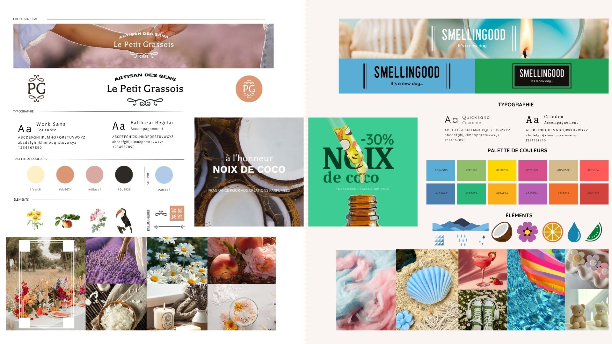

Stratégie Multi-Marque & Création de Contenu (LPG & SMG)
Affirmer deux identités distinctes sur un même marché et optimiser la visibilité en ligne.
Rôle : Stagiaire en Communication & Webmarketing
Livrables : Rédaction web SEO, création de contenus visuels, animation des réseaux sociaux, e-mailing

Valoriser la différence entre Le Petit Grassois (artisanal, haut de gamme, épuré) et Smellingood (accessible, dynamique, coloré). Déclinaison de chartes visuelles et de ton de voix adaptés à chaque cible.
Production d'articles de blog et réécriture de fiches produits optimisées pour le référencement naturel afin d'améliorer la visibilité sur les moteurs de recherche.
Réalisation de prises de vue produits : univers minéral pour LPG, compositions colorées pour SMG. Retouches, détourages et intégrations visuelles pour le site et les réseaux.
Création de contenus pour TikTok, Instagram et Pinterest. Proposition d'un format visuel sur Pinterest et préparation de séquences d'e-mails sous Mailchimp.
En pratique : Application concrète des techniques de communication web, de la rédaction au suivi de statistiques basiques.